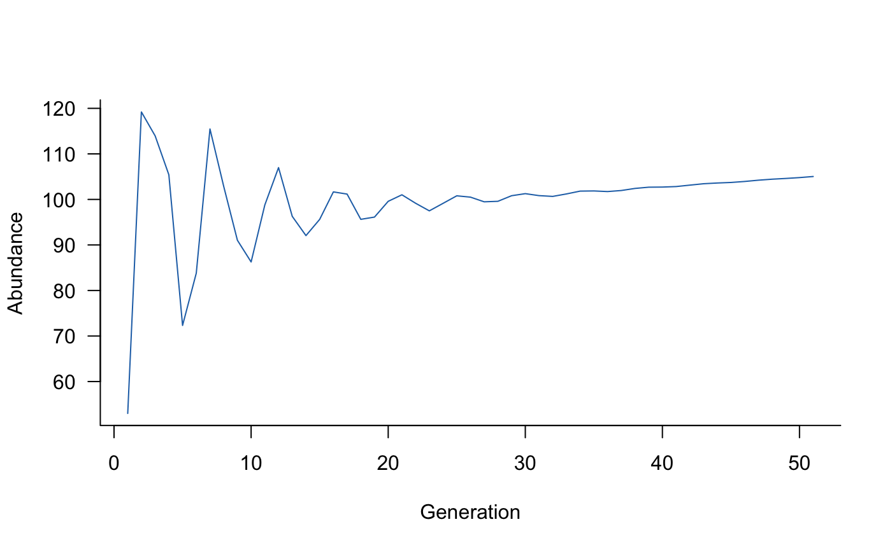

You can install the aae.pop package from GitHub. To install from GitHub, you’ll need the remotes R package, which you can install from CRAN with:
install.packages("remotes")
You can then install the aae.pop package from Github with:
remotes::install_github("aae-stats/aae.pop")
Once completed, you should be able to load the aae.pop package with library(aae.pop).
The aae.pop package requires elementary knowledge of population models. A comprehensive reference is Hal Caswell’s Matrix Population Models (2nd edition, 2001, Sinauer Associates, Sunderland). Searching for examples of population viability analysis, population demographic models, or matrix population models will bring up many alternative references.
aae.pop is designed for generic matrix models and makes minimal assumptions about model structure or purpose. However, there are still some assumptions built into the different functions and documentation. The most important is the layout of the population matrix itself. aae.pop assumes that columns move to rows. For example, a value in the second row and first column of a matrix will specify a transition from stage 1 (column 1) to stage 2 (row 2), that is, column 1 moves to row 2. This is a common layout in population ecology but is not standard in all disciplines.
There are two population structures used frequently in population ecology: the Leslie matrix (age based) and the Lefkovitch matrix (life-stage based). A Leslie matrix classifies into age classes, with transitions restricted to reproduction or survival to the next age class. A Lefkovitch matrix classifies individuals into life stages, with transitions restricted to reproduction, survival to the next life stage, or survival but remaining in the same life stage. aae.pop includes several helper functions designed specifically for these two model types. These are described in the Including processes and Beyond defaults vignettes.
aae.pop uses three terms to help specify common model structures: reproduction, survival, and transition. These are defined as follows:
reproduction: any transition to the first class (first row), assumed to exclude the first column (i.e., new individuals can’t reproduce).
survival: remaining in the same class.
transition: moving to the next age class or life stage.
With these terms, a Leslie matrix has reproduction and transition elements, whereas a Lefkovitch matrix has reproduction, transition, and survival elements.
Of course, matrix population models can have values anywhere in a matrix, and aae.pop supports any models represented as a square matrix. This flexibility is important because some populations might require complex structures to deal with things like metapopulations, dormant stages, or size-based models with shrinkage as well as growth.
The central functions in aae.pop are dynamics and simulate. The dynamics function wraps up a population matrix and any specified processes into a single object. The simulate function takes this object and generates population projections.
A good place to start is with a basic population matrix and no other processes. For example, a Leslie matrix with five age classes can be specified as:
popmat <- rbind( c(0, 0, 2, 4, 7), # reproduction from 3-5 year olds c(0.25, 0, 0, 0, 0), # survival from age 1 to 2 c(0, 0.45, 0, 0, 0), # survival from age 2 to 3 c(0, 0, 0.70, 0, 0), # survival from age 3 to 4 c(0, 0, 0, 0.85, 0) # survival from age 4 to 5 )
Using the terminology above, this same matrix could be specified as:
new_offspring <- c(2, 4, 7) transition_probabilities <- c(0.25, 0.45, 0.70, 0.85) popmat <- matrix(0, nrow = 5, ncol = 5) popmat[reproduction(popmat, dims = 3:5)] <- new_offspring popmat[transition(popmat)] <- transition_probabilities
Although this looks fairly unwieldy in this case, these helper terms can be useful with large matrices.
dynamics objectOnce the population matrix is defined, it can be compiled into a dynamics object with the following code:
popdyn <- dynamics(popmat)
It is possible to plot the population dynamics object to visualise the transitions and structure this implies. This requires the DiagrammeR package. Visualising population structures can be a useful way to check the model has been specified correctly, and these plots are easier to communicate than a giant matrix.
plot(popdyn)
With a compiled dynamics object, it’s relatively straightforward to simulate some population trajectories (with default settings):
sims <- simulate(popdyn)
Simulated trajectories can be plotted using the standard plot function in R. This example sets the colour to a medium shade of blue:
plot(sims, col = "#2171B5")

The default settings simulate a single trajectory with 50 time steps, from random initial conditions (Poisson draws with \(\lambda = 10\)). These settings can be changed directly in the call to simulate:
initials <- c(100, 50, 20, 10, 5) # some initial conditions sims <- simulate(popdyn, nsim = 100, init = initials, options = list(ntime = 20))
Default settings also specify that population updates are calculated as a cross product and that abundances are not rounded in any way in each step, which allows fractional individuals in the population. These are not ideal settings. Changing them is covered in the Beyond defaults vignette.